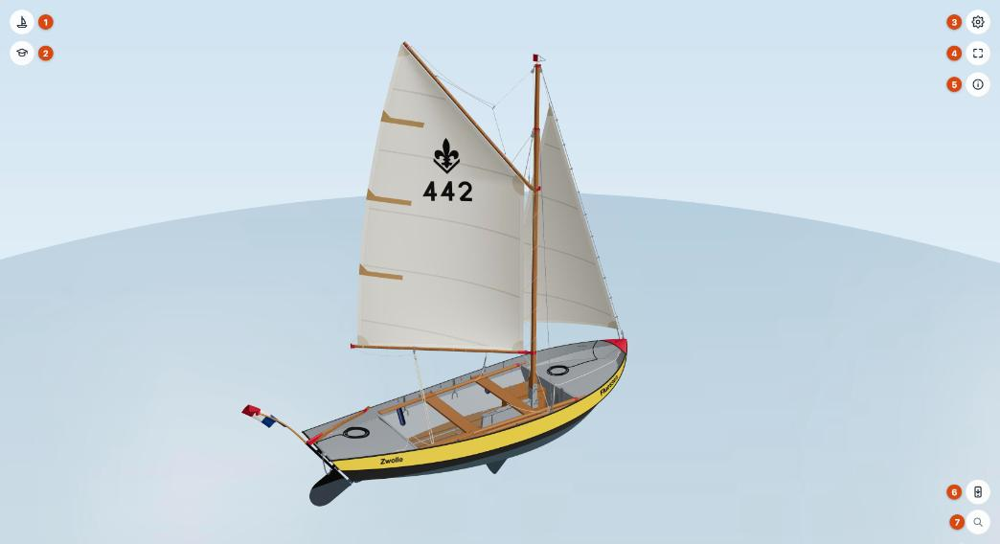
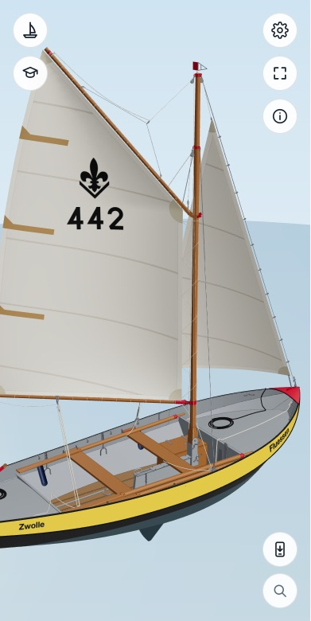

Aan de slag
De viewer laat de lelievlet in 3D zien. Je kunt hem draaien en van alle kanten bekijken, op onderdelen klikken, de boot laten zeilen of roeien, manoeuvres bekijken en oefenen, en de quiz doen.
Open de viewer als app, of gebruik hem op de site van je groep. Hij werkt op een computer, tablet en telefoon.
Het scherm


- Boot — de modus (zeilen, roeien, wrikken), de koers ten opzichte van de wind en het aantal riemen. Zie Zeilen en roeien.
- Oefenen — de studentenmuts: manoeuvres bekijken en oefenen, of de onderdelenquiz. In de modus roeien komt hieronder nog een knop voor de roeicommando's.
- Aanpassen — het tandwiel: zeilnummer, naam, kleuren en de snelheid van de animaties. Zie Aanpassen.
- Volledig scherm — ook met de toets f.
- Het i-menu — melden wat niet klopt, deze handleiding, Updates, Over dit model en de homepagina. Zie Het i-menu.
- Installeer als app — zet de viewer als app op je telefoon, tablet of computer.
- Zoeken — de lijst met alle onderdelen. Zie Onderdelen bekijken.
Elke knop opent zijn paneel ernaast. Je sluit het met Sluiten rechtsboven in het paneel, met dezelfde knop of met Esc; de panelen van de knoppen linksboven ook door ernaast te klikken.
Rondkijken
| Muis en toetsenbord | Aanraakscherm | |
|---|---|---|
| Draaien | Slepen met de linkermuisknop, of Shift + pijltjes | Slepen met één vinger |
| Zoomen | Scrollen (naar de muisaanwijzer toe), of + en − | Knijpen met twee vingers |
| Verschuiven | Slepen met de rechtermuisknop (of Shift + slepen), of de pijltjes | Slepen met twee vingers |
| Onderdeel kiezen | Klikken | Tikken |
De pijltjes en sneltoetsen werken als de muis boven de viewer staat of als je erin hebt geklikt; de pagina eromheen scrolt dan gewoon door.
Op een telefoon


Dezelfde knoppen, groot genoeg voor een vinger. Panelen en kaarten passen zich aan de breedte aan.